Cẩm nang sử dụng hệ thống
Hướng dẫn thao tác trên nền tảng OCH — Customer Data Platform: đăng nhập, điều hướng và cách sử dụng từng workspace. Tài liệu này tập trung vào hướng dẫn sử dụng; phần giới thiệu tổng quan, business flow và thị trường xem trong bộ slide trình bày.
1. Giới thiệu & Đăng nhập
OCH-CDP là nền tảng hợp nhất dữ liệu khách hàng xuyên các thương hiệu của tập đoàn (Givral, Kem Tràng Tiền, Fuji, Sunrise Nha Trang, StarCity Nha Trang, Dusit Le Palais Tu Hoa) thành một hồ sơ khách hàng 360° với một mã OCH ID duy nhất.
Các bước đăng nhập
- Mở trình duyệt tới địa chỉ hệ thống:
https://och-aicdp.aipower.vn/(môi trường phát triển nội bộ:http://localhost:8073). - Nhập Tên đăng nhập và Mật khẩu được cấp, bấm Đăng nhập.
- Hệ thống mở vào Control Tower — bảng điều khiển tổng quan.
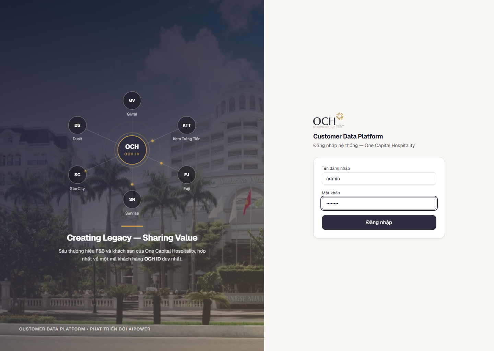
admin / Och@2026 (toàn quyền). Ngoài ra có các vai trò: data steward, marketer, CSKH, analyst, compliance, điều hành — mỗi vai trò thấy phần việc phù hợp.Quên mật khẩu
- Ở màn đăng nhập, bấm Quên mật khẩu? → nhập tên đăng nhập → bấm Gửi hướng dẫn đặt lại.
- Hệ thống báo đã tiếp nhận (link hiệu lực 30 phút, dùng một lần). Trên môi trường demo, khung "Chế độ demo" hiện ngay nút mở màn đặt lại — không cần chờ email.
- Nhập mật khẩu mới (tối thiểu 8 ký tự) và xác nhận → đăng nhập lại bằng mật khẩu mới.
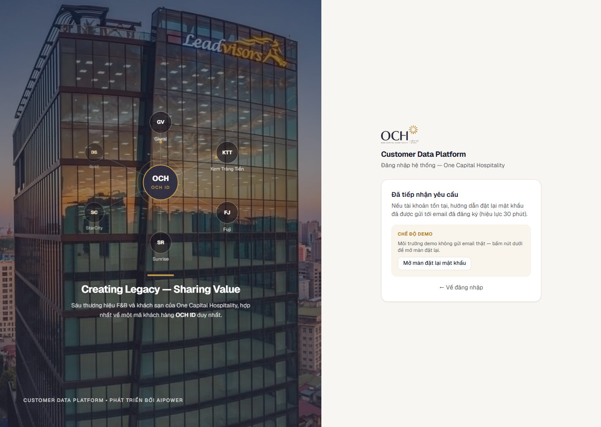
2. Điều hướng hệ thống
Thanh điều hướng bên trái gom các workspace theo nhóm chức năng, giúp tìm đúng việc cần làm.
| Nhóm | Workspace | Dùng để |
|---|---|---|
| Vận hành | Control Tower · Customers · Loyalty · Data Ops | Theo dõi realtime, tra cứu khách, điểm thưởng, quản trị dữ liệu gốc |
| Phân tích | Phân tích chuyên sâu · Audiences · Journeys | Insight doanh thu/vòng đời, tạo phân khúc, dựng hành trình tự động |
| AI | Trợ lý AI · AI & Governance | Hỏi đáp dữ liệu bằng ngôn ngữ tự nhiên, cấu hình & giám sát AI |
| Quản trị | Governance · Platform | Đồng ý (consent) khách hàng, quản trị người dùng & API key |
3. Control Tower
Mục đích: bảng điều khiển "tháp kiểm soát" — mọi chỉ số quan trọng của toàn tập đoàn hiển thị realtime, đáng tin, ở một nơi.
- Đăng nhập → hệ thống tự mở Control Tower.
- Đọc các thẻ KPI (doanh thu, số khách, giao dịch…) và biểu đồ xu hướng.
- Bấm vào workspace liên quan ở thanh trái để đi sâu vào chi tiết.
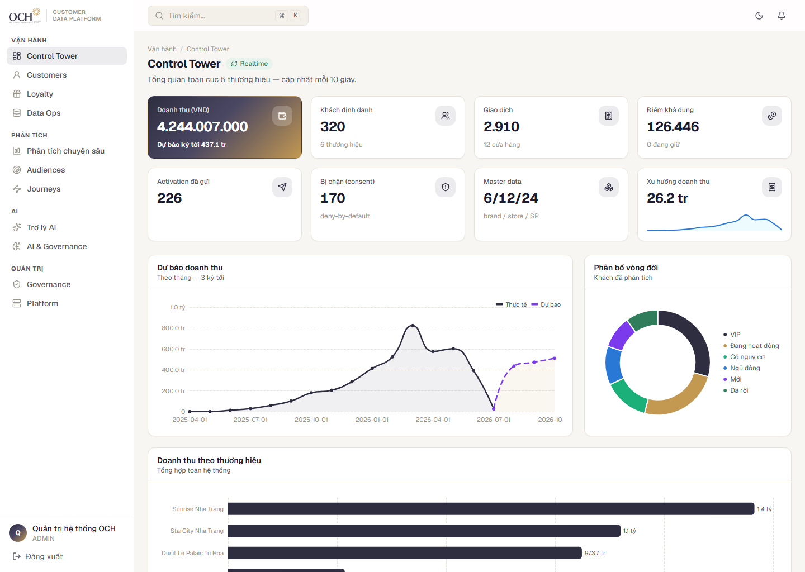
4. Khách hàng — Customer 360
Mục đích: xem chân dung khách hàng hợp nhất xuyên thương hiệu — hồ sơ, hạng, giá trị, hành vi mua và hành động kinh doanh đề xuất. Đây là màn "đắt giá" nhất để chăm sóc & bán hàng.
4.1. Duyệt danh bạ khách hàng
- Vào Customers ở nhóm Vận hành.
- Danh bạ liệt kê toàn bộ khách hàng hợp nhất kèm Hạng, Vòng đời, số thương hiệu, số đơn, chi tiêu, điểm.
- Dùng ô tìm theo tên/SĐT/email hoặc bộ lọc Vòng đời để thu hẹp; phân trang bằng nút Trước/Sau.
- Bấm vào một dòng để mở hồ sơ 360 của khách đó.
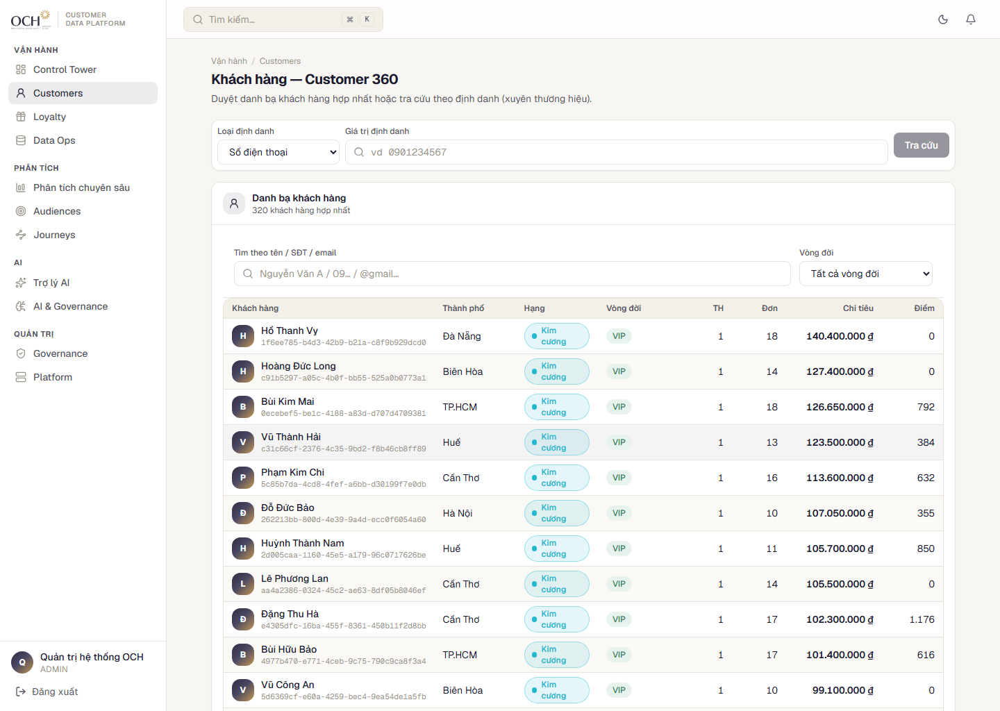
4.2. Tra cứu nhanh theo định danh
- Chọn Loại định danh (SĐT / Email / Thẻ loyalty…), nhập giá trị.
- Bấm Tra cứu — hệ thống hợp nhất mọi thương hiệu về đúng một OCH ID.
4.3. Đọc hồ sơ 360 & hành động
Hồ sơ 360 gồm nhiều lớp thông tin, đọc từ trên xuống:
| Khối | Ý nghĩa nghiệp vụ |
|---|---|
| Hạng khách hàng | Kim cương / Vàng / Bạc / Đồng theo tổng chi tiêu — ưu tiên chăm sóc. |
| Phân tích hành vi (AI) | Vòng đời, nguy cơ rời (churn), xu hướng mua, RFM, nhóm hàng ưa thích. |
| Hành động kinh doanh đề xuất | Gợi ý cụ thể: giữ chân khách nguy cơ rời, nhắc giỏ hàng bỏ quên, bán chéo F&B↔Khách sạn, đặc quyền VIP. |
| Giỏ hàng đang mở / bỏ quên | Món khách đang cân nhắc — cơ hội thúc đẩy hoàn tất đơn, không bỏ lỡ doanh thu. |
| Giá trị khách hàng (CLV) | Tổng chi tiêu (LTV), CLV dự đoán, giá trị đơn trung bình, thời gian gắn bó. |
| Nhịp mua & dự đoán | Khoảng cách mua trung bình → dự đoán ngày mua kế tiếp, cảnh báo quá hạn/sắp tới. |
| Xu hướng & ưa thích | Chi tiêu theo tháng, ưa thích thương hiệu/nhóm hàng, cửa hàng & thời điểm mua. |
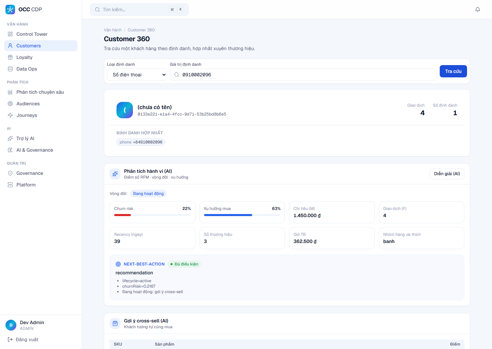
5. Loyalty — Điểm thưởng hợp nhất
Mục đích: tích/đổi điểm xuyên thương hiệu, minh bạch, không sai lệch quỹ.
- Vào Loyalty, nhập OCH ID của khách, bấm Xem số dư.
- Xem số dư khả dụng / đang giữ. Dùng Cộng điểm để tích, Giữ điểm để tạm giữ khi đổi thưởng.
- Với mỗi khoản giữ, bấm Chốt (xác nhận đổi) hoặc Hủy (hoàn điểm).
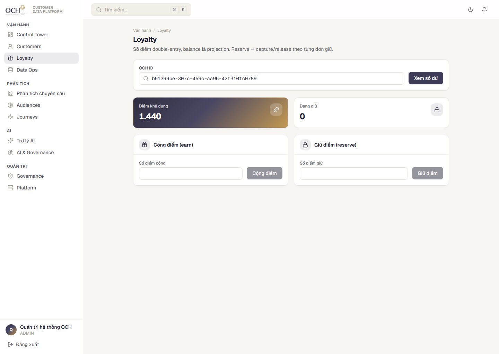
6. Data Ops — Master Data
Mục đích: quản trị dữ liệu gốc — thương hiệu, cửa hàng, sản phẩm chuẩn. Hỗ trợ đầy đủ Thêm · Sửa · Xoá.
- Vào Data Ops. Mỗi khối (Thương hiệu / Cửa hàng / Sản phẩm) có form thêm mới ở trên và bảng danh sách bên dưới.
- Thêm: điền form → bấm nút "Thêm…".
- Sửa: bấm Sửa trên dòng → form chuyển sang chế độ chỉnh → sửa xong bấm Lưu.
- Xoá: bấm Xoá trên dòng → xác nhận. (Không xoá được nếu còn dữ liệu liên quan — hệ thống báo rõ.)
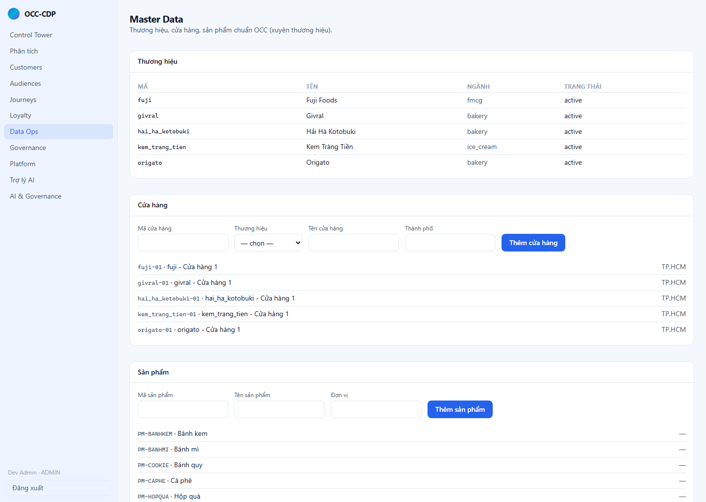
7. Phân tích chuyên sâu
Mục đích: bức tranh phân tích cấp điều hành — doanh thu & dự báo, vòng đời khách, cộng hưởng đa thương hiệu.
- Vào Phân tích chuyên sâu ở nhóm Phân tích.
- Đọc biểu đồ doanh thu theo tháng, dự báo, phân bố vòng đời, và mức độ khách dùng nhiều thương hiệu.
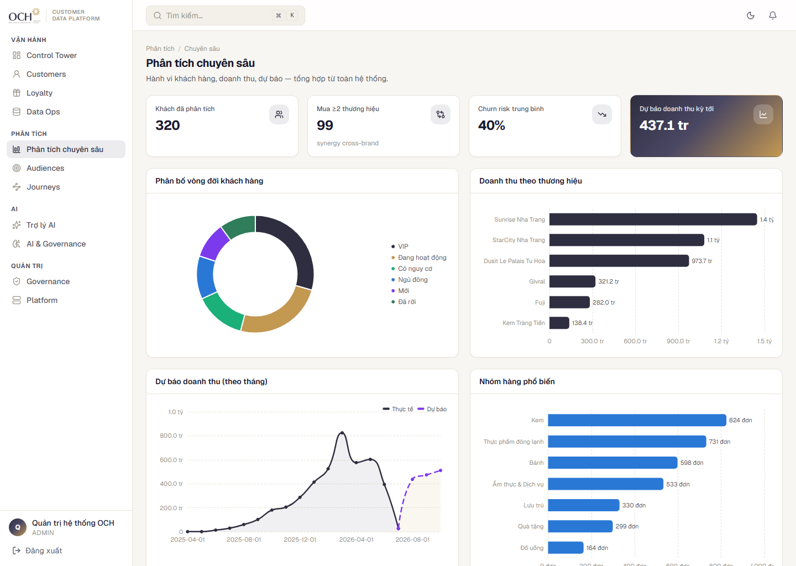
8. Audiences — Tạo phân khúc & Kích hoạt
Mục đích: chọn nhóm khách theo tiêu chí rồi kích hoạt tới kênh (email/SMS/Zalo…). Hệ thống tự loại người chưa đồng ý (consent).
- Vào Audiences. Đặt tiêu chí segment (thương hiệu, chi tiêu tối thiểu, số giao dịch…) và bấm Xem trước segment để biết số khách khớp.
- Nhập Tên audience, chọn Mục đích / Kênh / Destination.
- Bấm Kích hoạt. Hệ thống hiển thị số được gửi và số bị loại do chưa đồng ý.
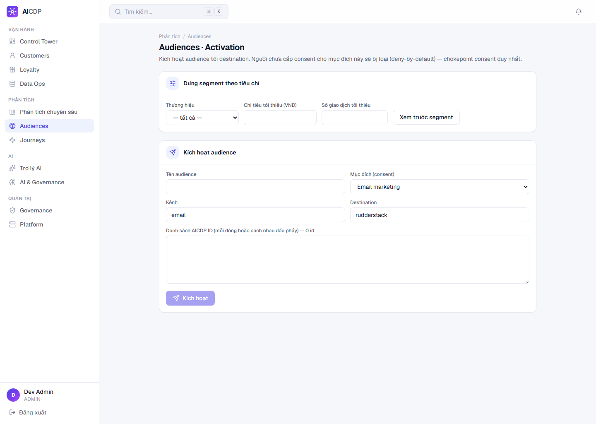
9. Journeys — Hành trình khách hàng tự động
Mục đích: dựng kịch bản chăm sóc tự động (chào mừng, thưởng VIP, kéo lại khách ngủ đông, ưu đãi lưu trú…) bằng thao tác kéo-thả, rồi để hệ thống tự chạy.
- Vào Journeys → xem danh sách hành trình; bấm Tạo để dựng mới hoặc bấm một hành trình để mở chi tiết.
- Trên canvas, ghép các bước: Điểm vào (sự kiện/segment) → Chờ → Điều kiện → Hành động (tặng điểm / gửi kích hoạt) → Kết thúc.
- Bấm Publish để chốt phiên bản, rồi Kích hoạt để bắt đầu thu nạp khách.
- Mở tab Người tham gia và Báo cáo để theo dõi hiệu quả.
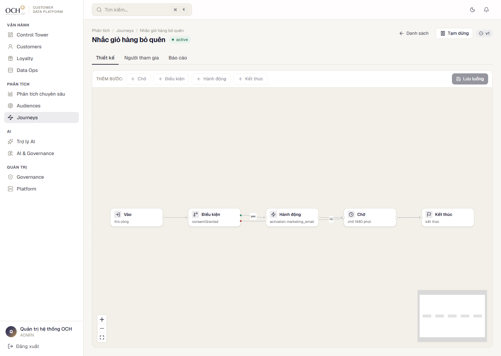
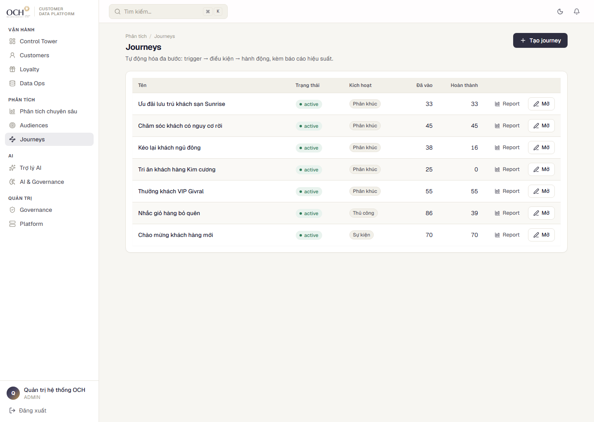
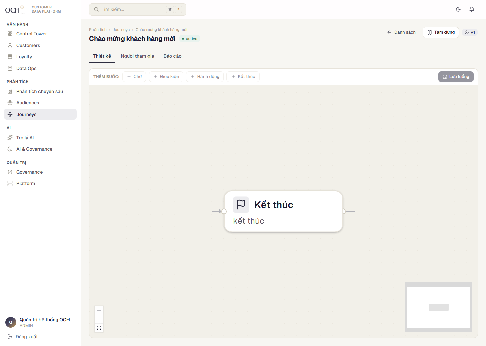
10. Trợ lý AI & AI Governance
Mục đích: hỏi đáp dữ liệu bằng ngôn ngữ tự nhiên và quản trị các tham số AI của hệ thống.
Trợ lý AI
- Vào Trợ lý AI, gõ câu hỏi nghiệp vụ (ví dụ: "gợi ý nội dung ưu đãi cho khách Kim cương ngủ đông").
- Đọc phản hồi; dùng cho tra cứu nhanh, gợi ý phân khúc/nội dung.
AI & Governance
- Vào AI & Governance để bật/tắt tính năng AI, chỉnh ngưỡng (RFM, gợi ý, dự báo…).
- Mọi thay đổi được ghi nhật ký audit — minh bạch, truy vết được.
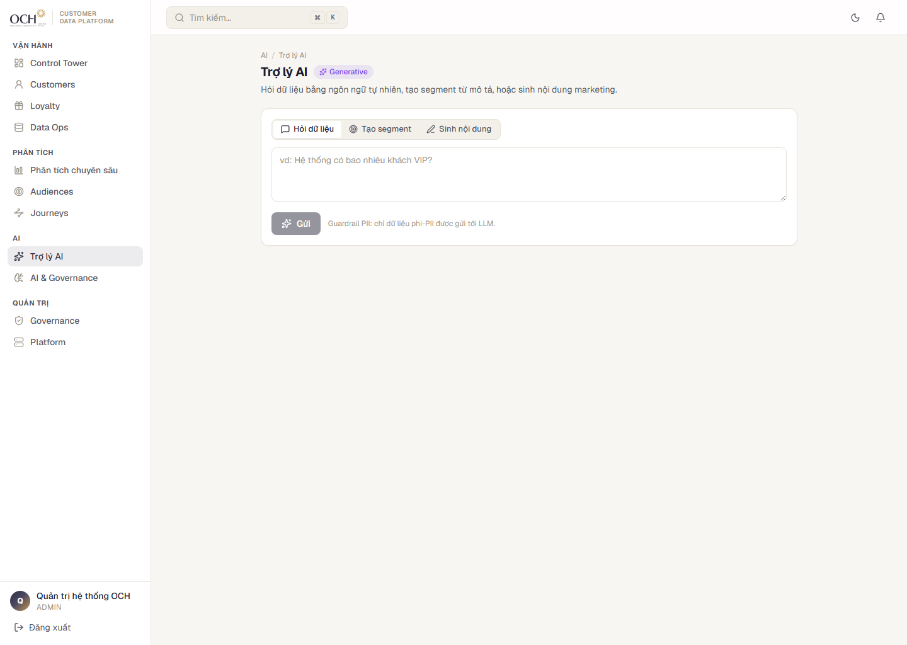
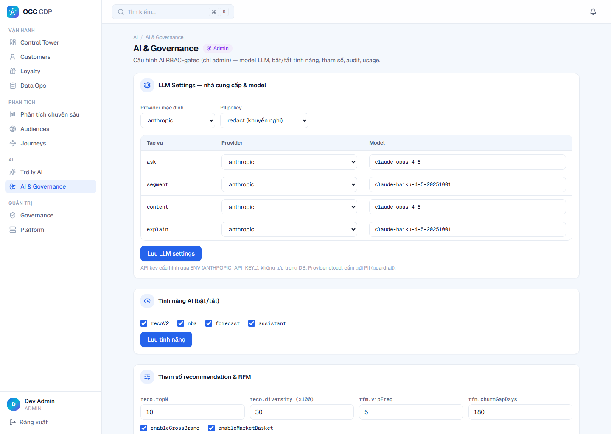
11. Governance — Đồng ý & Quyền riêng tư
Mục đích: quản lý sự đồng ý (consent) của khách theo từng mục đích. Nguyên tắc mặc định từ chối — chỉ gửi khi khách đã đồng ý.
- Vào Governance, nhập OCH ID, bấm Xem consent.
- Với mỗi mục đích (email/SMS/Zalo/cá nhân hoá/chia sẻ dữ liệu): bấm Cấp hoặc Thu hồi.
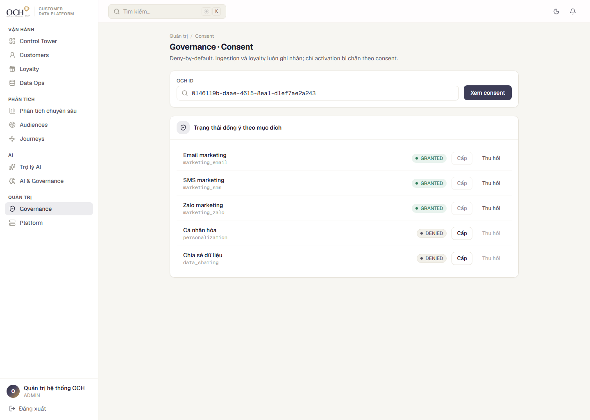
12. Platform — Người dùng & API key
Mục đích (chỉ admin): quản trị tài khoản người dùng theo vai trò và khoá tích hợp (API key) cho hệ thống khác.
- Vào Platform. Khối Người dùng: thêm user (username, mật khẩu, họ tên, vai trò), Sửa/Vô hiệu/Xoá trên từng dòng.
- Khối API keys: tạo khoá cho kết nối service-to-service; khoá chỉ hiện một lần — sao chép ngay. Có thể Thu hồi hoặc Xoá.
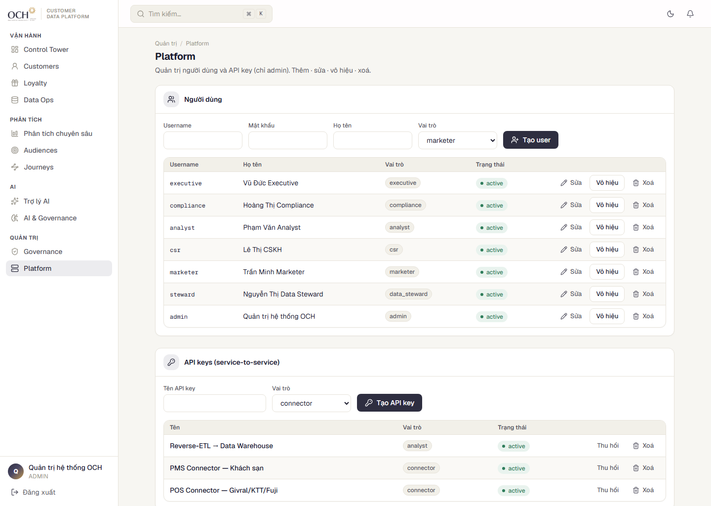
13. Mẹo & phím tắt
| Thao tác | Cách làm |
|---|---|
| Tìm nhanh màn hình | ⌘/Ctrl + K hoặc bấm ô Tìm kiếm |
| Đổi giao diện Sáng/Tối | Biểu tượng mặt trời/mặt trăng góc trên phải |
| Về danh bạ từ hồ sơ 360 | Bấm "← Về danh bạ khách hàng" |
| Ưu tiên xử lý bán hàng | Xem thẻ Ưu tiên cao ở "Hành động kinh doanh đề xuất" |